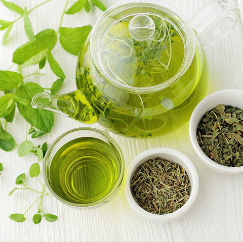
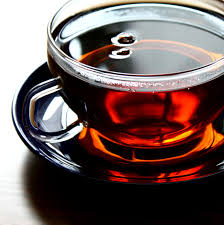
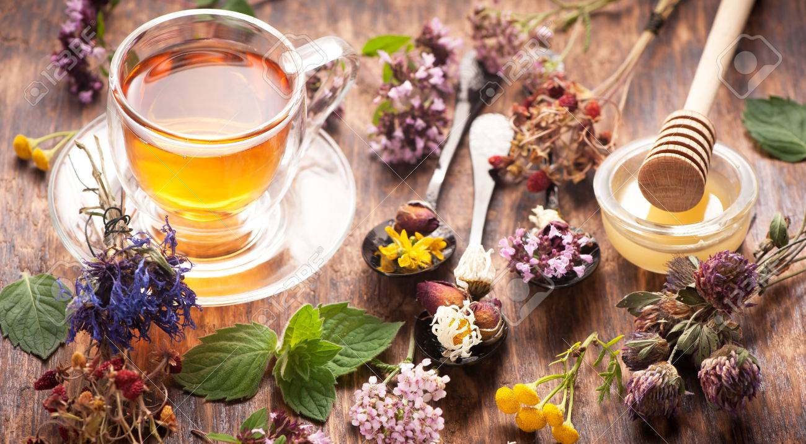

 Green tea is a type of tea that is made from Camellia sinensis leaves and buds that have not undergone the same withering and oxidation process used to make oolong teas and black teas. Green tea originated in China, but its production and manufacture has spread to other countries in East Asia.
2. Black tea:
 Black tea is a type of tea that is more oxidized than oolong, green, and white teas. Black tea is generally stronger in flavor than other teas. All four types are made from leaves of the shrub Camellia sinensis.
3. Herbal tea:
 Herbal tea—less commonly called tisanes —are beverages made from the infusion or decoction of herbs, spices, or other plant material in hot water. The term "herbal tea" is often used in contrast to true teas, which are prepared from the cured leaves of the tea plant, Camellia sinensis.